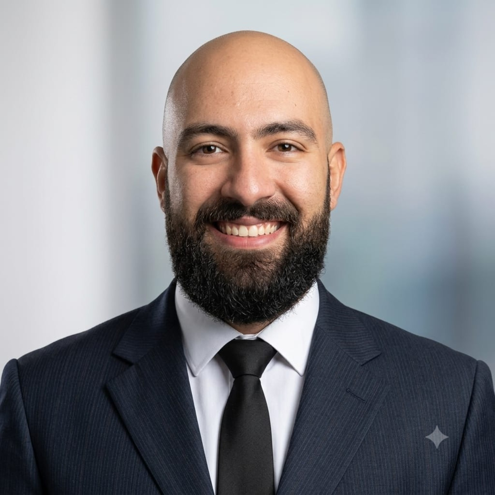
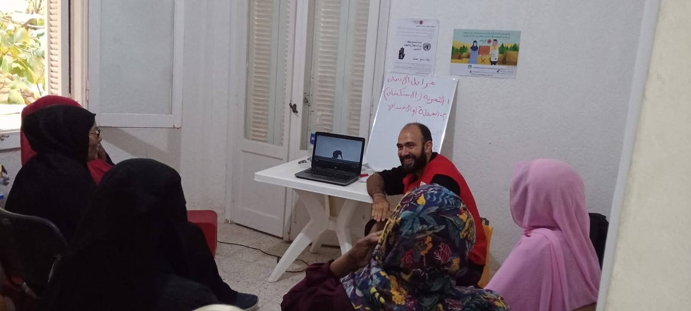
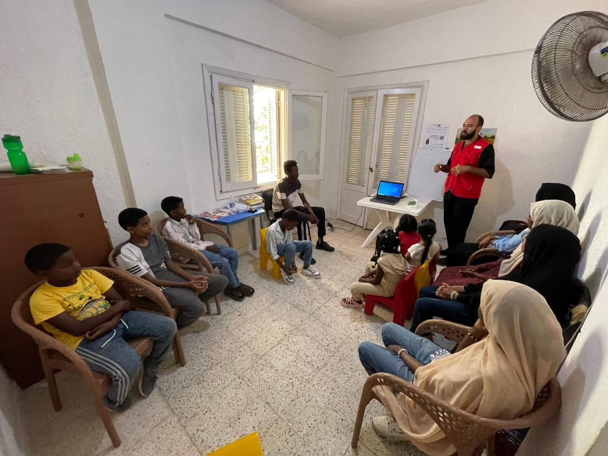
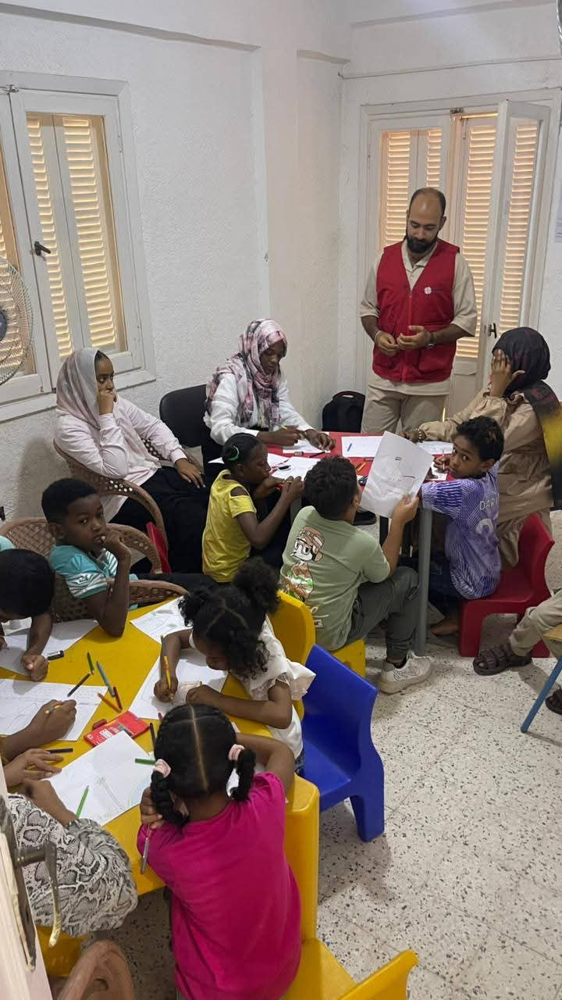
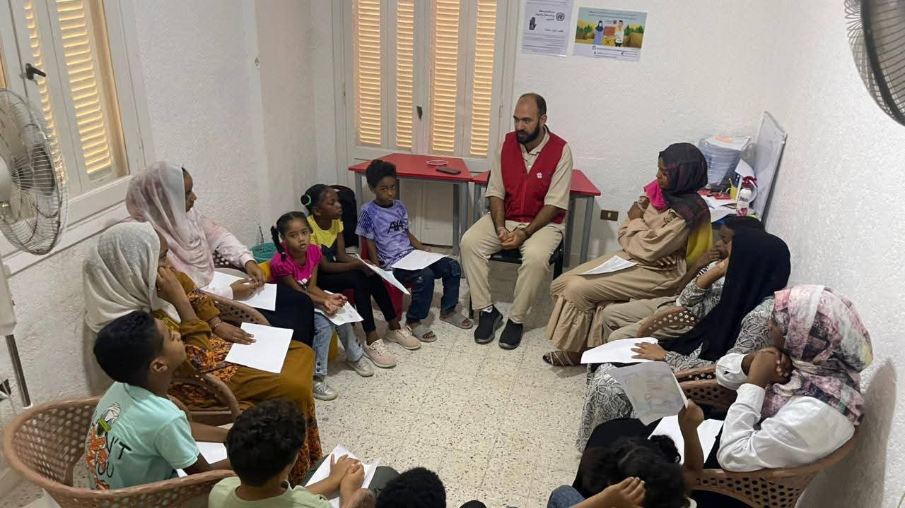
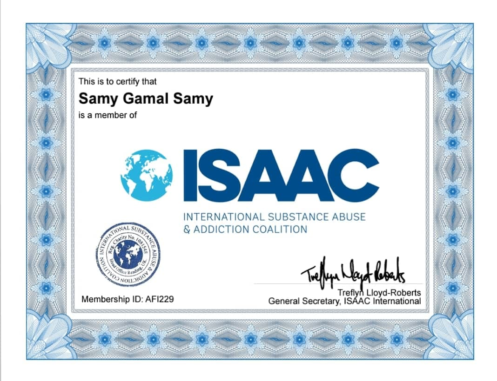
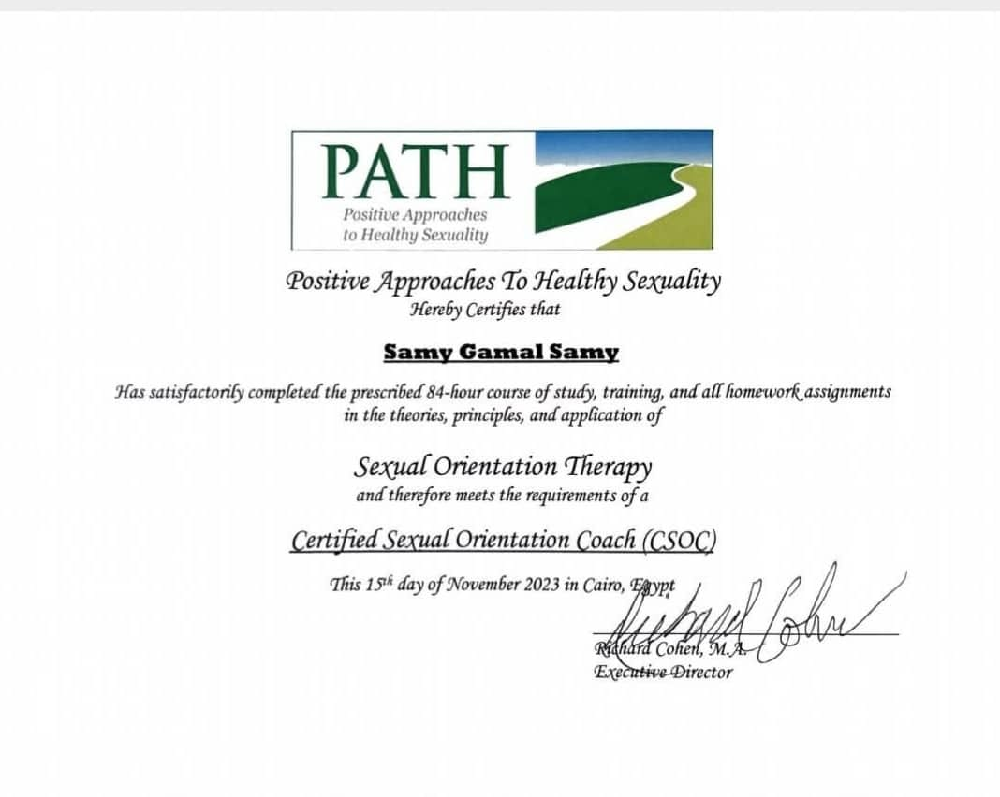

Psychologist · Mental Wellbeing
Samy Gamal Isakhron
سامي جمال إسخرون
Understanding Yourself Is a Step Toward Wellbeing.
Thoughtful psychological support, at your pace. Explore a calm space to understand what you’re experiencing and find your next steps.
Book a session Get to know meProfessional details will be added once verified.

Samy Gamal Isakhron · PsychologistA considered approach
Start where you are.
Professional experience in psychological and family guidance, with respectful, person-centered support.
Read the full biography
- A warm, attentive conversation
- A pace that respects your needs
- Clear information before you decide
“You don’t have to have everything figured out before reaching out.”
Ways we might work together
Support shaped around you.
Service offerings and scope should be confirmed before publishing. Placeholders below do not claim current availability.
Psychological and family counselling
Support sessions for adolescents and young people
Psychoeducation
Training
Training and Workshops




46
Professional background
Experience that informs the work.
These details will be displayed after Sami verifies them.
Education
Diplomas and certificates
International memberships and credentials
ISAAC membership
Member of the International Substance Abuse & Addiction Coalition (ISAAC).

Open the full-size certificateCertified Sexual Orientation Coach (CSOC)
Completed an 84-hour course of study and training in Sexual Orientation Therapy through PATH (Positive Approaches to Healthy Sexuality), issued 15 November 2023.

Open the full-size certificateCourses and training
Areas of interest and training
Languages
Organizations
Professional experience
Relevant experience
Volunteering and community participation
Professional indicatorsAchievements and professional statistics
View statistics
Professional indicators
Achievements and professional statistics
Take the next step
Let’s start with a conversation.
A request is not a confirmed appointment. Time and format must be confirmed directly.
A simple first step.
Share only what’s needed to arrange a reply. Please don’t include sensitive personal or medical details.
Email: samygamal883@gmail.com
WhatsApp: +201200964133
Privacy: This demo does not send or store entries. Connect an approved secure service before collecting real requests.